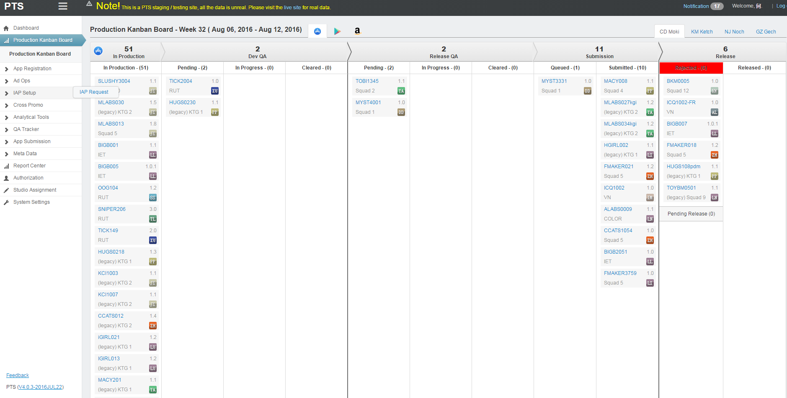
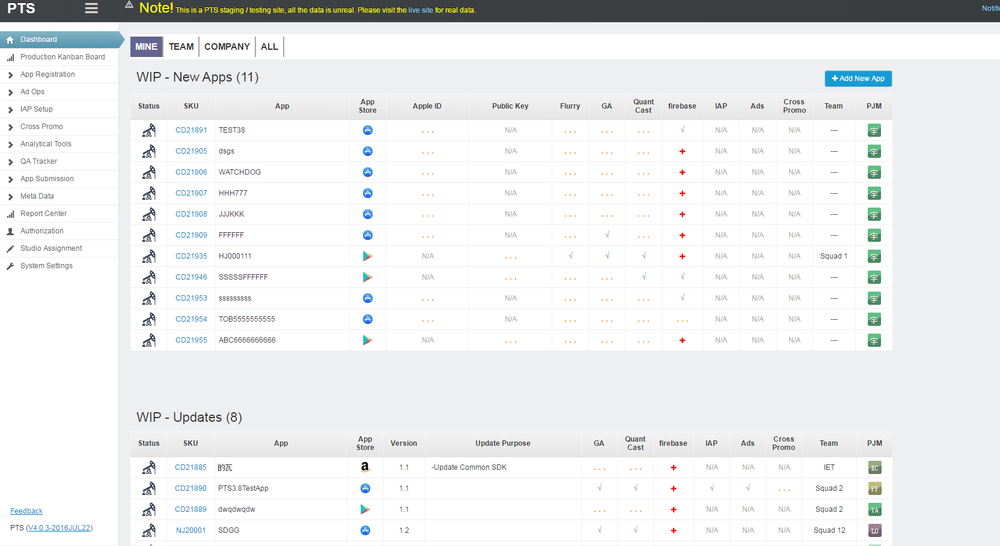

PTS¶
全名为production tracking system即生产周期管理系统。该系统是公司 最大最重要 的一个系统。管理3000多个App的开发过程。
该系统采用 django-suit （就是admin的美化版）进行开发。由于admin的限制，累积了很多问题。
我所做的工作除了功能完善外，就是利用自定义前端页面，改善用户体验。其中最具代表的是两个数据聚合页面。
一个是App kanban，一个是dashboard。
App kanban需求¶
该页面的目标是向用户呈现公司所有在开发app的状态。不同状态的app散布在不同的列，被商店拒绝的app会进行特殊的红色标记。
见下面的截图，每个小块代表一个app，红色标记的代表被商店拒绝的app，需要开发人员马上解决问题。公司领导可以从该页面中看到整个公司app开发的宏观情况，pjm可以看到自己的app驻留在哪个阶段。
kanban截图
Dashboard需求¶
该页面会作为用户的home界面（即登陆后的默认界面），以用户为核心，按app为单位将信息整合起来，使之一目了然。此外集合了大部分的用户操作，极大的方便了用户使用，是名副其实的Dashboard。
dashboard截图
过程描述¶
这两个页面的难度都在于前端。如果使用传统的前端开发方式，开发和维护前端页面是比较困难的。Angularjs框架再一次发挥了它的威力。在我心中坚定了一个信条，后端的事情后端干，前端的事前端干。要开发产品级别的管理系统，必须前后端都要兼顾。